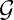

-
Reply: The idea of scale invariance was intended as follows. Suppose we have networks or graphs 1,…,N that do not share common nodes (vertices) and ρ(i) = k, ∀i, then ρ(⋃ ii) = k. Taking the union of graphs that have the same inversity k would obtain a graph with the same inversity k. That was the idea we had when we used the term “scale invariance” since the size of the graph can be say doubled by adding an equivalent graph and the combined (union) graph would have the same inversity. What we are trying to get at is that if structure is the same, then inversity does not change directly with size.
-
With regard to your point about the change in inversity with regard to size, we have explained better why we should expect this. V: Need to add this point below to the supplement. In Figure S6, it is not just the size of the network that is changing, but the structure is changing. Specifically, we keep the cliques constant and vary only the size of the single star network. Thus, there are two aspects of the network that are changing. First is the size of the network. Second is the proportion of the network that belongs to the star component. Thus, this figure is not an appropriate one to infer anything about scale-invariance.
For inversity you flip it: how similar is ego to the inverse of alter? And 1/deg(j) is non-linear, so (at least to me) not intuitive. The main difference between corr(deg(i),deg(j)) and corr(deg(i),1/deg(j)) is easily seen in a scatterplot. Consider a generalization of your figure 1, panel (a) where the network is a collection of cliques of different sizes. Here ranging from dyads (collections of degree=1) to (arbitrarily) 15 (degree=14). The baseline scatterplot and scores are as at right. The assortativity scatter in blue using the left y axis, inversity in red indexed on the right y axis. So assortativity is perfect, but because 1/deg(j) is curved in deg(j), the score is not perfect (it’s -0.76). Now that lack-of-fit is not really informative in the natural correlation sense – we shouldn’t expect a linear association measure to capture a non-linear functional form.
Now let’s just delete some of those middling cliques so that we no longer have the full range and see what happens: The font is a little small (sorry about that) but the pattern is obvious: assortativity stays constant, and inversity ranges arbitrarily close to -1.0 depending on the mix of cliques included. This is, of course, implied by eq 4 – as the selection of cliques is affecting the moments of the degree distribution, which is what drives the score (and it must also drive assortativity, I’d think?). So is this a feature or a bug? Is there any substantive difference between these cases? The dominant feature is a collection of cliques. Inversity varies across the cases because a collection of 1/d cases contribute more of that curve the more complete the range of d included in the network. When there are only 2 classes of numbers (isolated dyads and a big clique), there are only two points on the plane, and the correlation is perfect. To get positive inversity, you need hubs and pendants. Then the scatter will have a lot of points at degree=1 (all the pendants), each with alters having degree > 1 which implies an inverse-degree is << 1 generating a blur of points at x=1 and y <small>. The hubs then have x >> 1 and at least some mass at y = 1 (inverse degree of a pendant=1), creating a positive association.
And again we can play the same sort of game where we limit the collection of stars to get arbitrarily close to -1.0, though unlike the clique case here we also get variance in assortativity, so that seems a reasonable (if uninteresting) mapping, but again the issue is that the underlying feature here is that the graph needs many star-like substructures to generate a positive inversity. My instinct is something like this might be useful to spell out clearly in the supplement (perhaps more so than S3, at least for me). Now in all of these cases, the assortativity and inversity scores are strongly negatively correlated. They are not constant – in part because (as we see in the example for cliques) inversity varies based on the collection of sizes included – so in all those cases assortativity is constant (1.0) and inversity is not. Again, you claim this as a feature and (since we rarely see collections of cliques) I’m willing to give the benefit of the doubt on that. I’ve run the scores over about 3000 real-life networks from different domains that I happen to have on hand, which includes coauthorship, adolescent networks, village networks and some sundry others. I get this:
So inversity is not the same as assortativity, but darn that’s close (the R2 of a simple regression model is 0.97). Color here is data source, so a lot of variation across types of networks. And you can see, for example, that there are cases where both have the same sign – right there around zero. The difference between the local mean and the global mean generally gets smaller the closer you get to the origin point there...so effectively this is a noise region. In figure S6 you seem to have cases where both are strongly positive – like about 0.5 where your series crosses over. Whatever those networks look like, they are not representative of the sorts of social networks I bump into regularly. So what? I think you (reasonably) want to push the idea that these are fundamentally different critters to signal value to your method. I would just temper that – in the sorts of settings where you might want to do an intervention (the 75 villages data is in this set, for example) – they don’t seem that different, and you don’t want to build an argument around edge-cases. (That said, you should probably produce an inset sociogram or some such for figure s6 that makes clear what sort of structure generates the at-least-to-me odd cases you find).
-
Reply: V:We need to discuss this in detail.
- (a)
- the last sentence of the abstract is redundant with the stuff above, strike one or the other.
-
Reply: Agree. We have updated the abstract to avoid this redundancy.
-
- (b)
- I would switch early from “friends” to “neighbors” and use that consistently throughout, fine to
reference “friendship paradox” but this holds for non-affective relations (it holds generally for graphs),
so go with the more general features (I just saw a Scientific Reports paper, for example, that made hay
out of the fact that it holds for negative ties. Go figure). So, instead of “friends of friends” use
“two-step neighbors” or “neighbors’ neighbors.”
-
Note there’s a natural confusion here in addition to the two forms you layout. I think most people will not think of i naturally as being a neighbor’s neighbor. Of course they are, but friends-of-friends are not usually “me.” This is clear in figure S1, but perhaps not in the text at this point.
-
Reply: We agree that neighbors would be a more general and natural usage, given the wider applicability. We have used neighbor beyond the first paragraph of the main paper, but have retained the well-known term “friendship paradox,” rather than use a new term for this phenomenon.
-
- (c)
- Line 141 .. always holds for *non-regular* networks (I think that’s what you mean by “weakly” but I
think being clear about what class of graphs is better.
-
Reply: We agree, and have made the change suggested.
-
- (d)
- I’m not sure what the phrase “prove that the sign ... helps us determine” how do you prove something
“helps”?
-
In my sample, if global > local, then inversity is always negative. If local>global, there is also a small subset where inversity is negative. So perhaps “helps” means “is not quite certain”?
-
Reply: We replace “helps us determine” by “determines” since the value of inversity directly tells us which intervention is better. If local > global, then inversity ρ would always be positive, based on equation (4), reproduced below. Note that the function Ψ is always positive.
(1)
-
- (e)
- Line 217, I think you’re missing an “is” somewhere there.
-
Reply: We have fixed this, by adding an “and” to the sentence.
-
- (f)
- Line 249 – this sort of place replace friends with neighbors.
-
Reply: Agree.
-
- (g)
- Is there a better way to say “depends on the structure of connections (who is connected to whom)”
which you repeat throughout? You are trying to distinguish between things that are just a
function of the degree distributions and those that actually depend on the edgelist. I’d use
“topology” or “structure”. Perhaps just note it first and don’t repeat the “who with whom”
parts.
-
Reply: We agree network topology might be a useful way to indicate this and reduce this repetition. We only use the longer form when introducing this term. V:Need to do.
-
- (h)
- Line 351; this first point seems redundant with 291.
-
Reply: We think it would help the reader to highlight the contrast, at the risk of mild repetition. The revised sentence reads: “First, we see that inversity and the local mean are highly sensitive to network structure (who is connected to whom), whereas the global mean does not vary so long as the degree distribution is fixed (as shown earlier).”
-
- (i)
- Again, stuff around line 392 is built on, seemingly, pretty weird networks. In most real-life cases, they
are very similar. Ditto with the rank ordering – my sense is that when this is true, the
networks either don’t look much like social networks we typically collect or are effectively
equal.
-
Reply: We have added a caveat in the main paper that this would be an important thing for future research to examine. V: We probably need to discuss this point and figure out the best way to address.
-
- (j)
- Line 504: you can’t, in practice, exclude isolates if you don’t know who is not connected.
-
Reply: By construction, the local and global strategies would exclude isolates, since they cannot be nominated by anyone. We account for the possibility of choosing an isolate in the implementation of seeding strategies detailed in Table 1.
-
- (k)
- Do you need a fixed proportion? Again, thinking practically, most people won’t be very good at
estimating their number of friends. So asking them to nominate a proportion of their peers is going to
be hard.
-
Reply: Yes, the mathematical equivalence to the global mean requires usage of a fixed proportion. We also detail this point you have highlighted with a caveat as follows. V: We should discuss how to caveat this in the main paper.
-